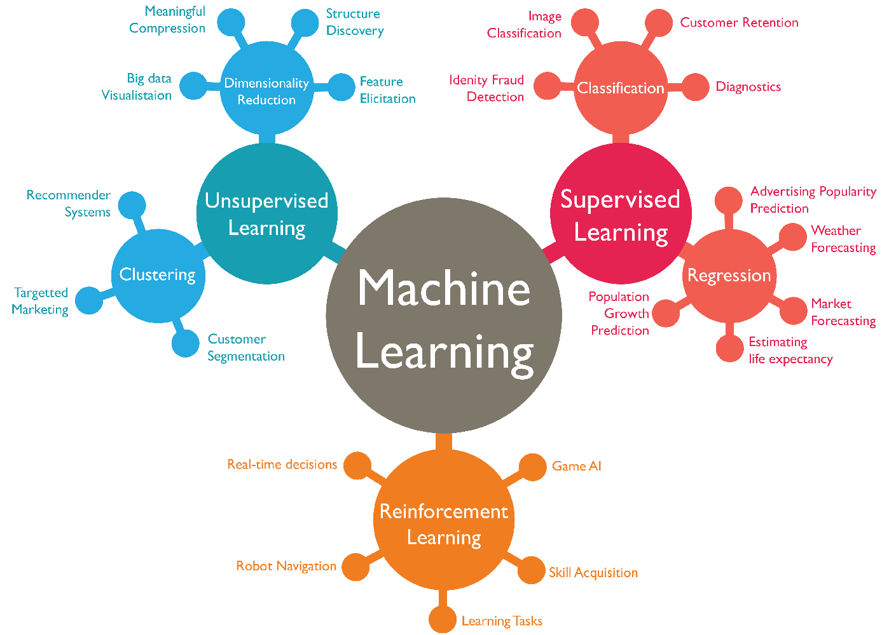
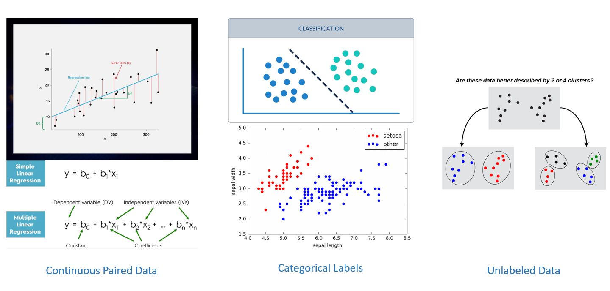

The Machine Learning Fundamentals#
Machine learning involves fitting mathematical models to data to derive insights or make predictions.
“[Machine Learning is the] field of study that gives computers the ability to learn without being explicitly programmed.”
—Arthur Samuel, 1959
These models work by taking features as inputs. A feature is a numerical representation of an aspect of raw data. Features act as the intermediary between raw data and machine learning models within the overall pipeline.
Machine Learning is great for:
Problems for which existing solutions require a lot of hand-tuning or long lists of rules: one Machine Learning algorithm can often simplify code and perform better.
Complex problems for which there is no good solution at all using a traditional approach: the best Machine Learning techniques can find a solution.
Fluctuating environments: a Machine Learning system can adapt to new data.
Getting insights about complex problems and large amounts of data.
The Machine Learning Core Concepts#
Data: Data are observations of real-world phenomena. Each data point provides a snapshot of a specific aspect of reality. When collected, these observations form a larger, yet often incomplete and noisy, picture. Real-world data tends to be messy, with noise, errors, or missing values, making it essential to clean and process it before further analysis.
Models: A model is a mathematical abstraction that describes relationships between different aspects of the data. For instance, a music recommendation model might quantify user similarities based on their listening habits, recommending artists to users with similar music preferences. Models generalize from past observations to predict or infer outcomes on new data.
Features: A feature is a numerical representation derived from raw data. There are various ways to convert raw data into useful features, which can range from simple measures to more complex transformations. The selection of features depends not only on the nature of the data but also on the type of model being used. Certain models work better with specific kinds of features. Effective features are both relevant to the task at hand and suited to the model’s architecture.
Feature engineering is the process of extracting and transforming raw data into formats that are useful for the model. It involves crafting the most suitable features based on the data, model, and the specific problem being addressed. It’s a critical step because well-crafted features can significantly reduce the complexity of modeling, leading to more accurate predictions and better overall performance.
The main steps of the machine learning pipeline#
Look at the big picture.
Get the data.
Discover and visualize the data to gain insights.
Prepare the data for Machine Learning algorithms.
Select a model and train it.
Fine-tune your model.
Present your solution.
Launch, monitor, and maintain your system.
Mathematical Representation#
In all machine learning tasks a sample is characterized by a D-dimensional feature vector: $\(\textbf{x} = (x_1, ..., x_D)^T .\)$
We seek to find a mathematical model to predict some outputs that can be expressed as a function \(f\): $\(\^y = f (\mathbf{x})\)$
where \(\^y\) is an output estimated by our model. In the case of regression it is an estimated target value, for classification and clustering it is an estimated label, and for dimensionality reduction it is a transformed feature vector. Let’s assume that we have N training samples with feature vectors \(\mathbf{x}_1, ...,\mathbf{x}_N\) defined as follows: $\(\textbf{x}_i = (x_{i1}, ..., x_{iD})^T .\)$
The features of the training samples determine a feature matrix \(\mathbf{X}\) that characterizes the whole training set. The dimensiones of the feature matrix are N × D, with training samples corresponding to the rows of the feature matrix and individual features to the columns of the feature matrix. In supervised learning we expect an output \(\mathbf{y}_i\) for each training sample \(\mathbf{x}_i\). These outputs determine the target vector for regression and the label vector for classification as follows: $\(\textbf{y} = (y_1, ..., y_N)^T .\)$
To find the mathematical model \(f\), we need to select its mathematical form, which will vary according to the machine learning algorithm. In general, we select our model in advance by choosing a mathematical form of the function \(f\) that depends on the feature vector \(\mathbf{x}\) and parameter vector \(\theta\): $\( \^y = f(\mathbf{x},\theta) \)$
Training the model \(f\) can then be mathematically expressed as finding the parameter vector \(\^\theta\) that minimizes some loss function F for the given training set $\( \^θ = \argmin_\theta \mathbf{F}(\mathbf{X},\mathbf{y}, \theta) \)\( where \)\mathbf{y}$ is dropped from the equation for unsupervised tasks.
Types of Machine Learning#
There are three key types of ML: supervised learning, unsupervised learning, and reinforcement learning.
Supervised learning is the most common type. In this approach, the model is trained on a labeled dataset, where both the input data and the desired output are provided. The goal is for the model to learn the mapping from inputs to outputs, so that when new data is introduced, it can make accurate predictions. Imagine teaching a model to predict whether a tissue sample is cancerous based on its features (like cell shape or genetic markers), where the labels (“cancerous” or “non-cancerous”) are already known. In biomedicine, this can be used for tasks like disease diagnosis, where large amounts of labeled data (from patient records or clinical trials) are available.
In unsupervised learning, there are no labels provided. Instead, the model tries to find hidden patterns or groupings in the data on its own. This is particularly useful when you’re dealing with large datasets without clear outcomes, such as discovering subtypes of a disease based on patient data. For example, clustering algorithms might reveal previously unknown patterns in gene expression data, leading to new biological insights. Unsupervised learning is often exploratory, helping researchers uncover new relationships in the data without prior assumptions.
Reinforcement learning is quite different from the first two. It involves an agent that learns to make decisions by interacting with its environment, receiving feedback in the form of rewards or penalties. Over time, it learns to take actions that maximize cumulative reward. Think of it like training a model to optimize a treatment strategy by constantly adjusting the dosage or timing of a drug based on patient response. While it’s not as commonly used in biomedicine as supervised and unsupervised learning, reinforcement learning holds promise for personalized medicine, where treatment strategies need continuous adaptation based on feedback.

Regression, Classification, and Clustering#
In the biomedical field, regression, classification, and clustering are applied to various tasks, each addressing different types of problems related to data analysis, diagnosis, and research.

Regression#
In regression tasks, the objective is to predict a continuous numerical outcome based on various input features. For example, in a medical context, you might use regression to predict a patient’s blood pressure based on variables such as age, weight, smoking habits, and family history. The model learns how these factors influence the target value, which is the blood pressure level, and predicts a specific value for a new patient.
Another common application is in pharmacokinetics, where regression models help estimate drug concentration levels in the bloodstream over time. By inputting patient-specific variables like dosage, metabolism rate, and kidney function, the model predicts the concentration of the drug at any given time.
Regression outputs real numbers, making it suitable for problems where precise numerical predictions are needed in medical settings, such as predicting recovery times or estimating disease progression rates.
Classification#
Classification, on the other hand, focuses on predicting categorical outcomes. In the medical field, this often involves diagnosing diseases. For instance, a model might classify patients as either having or not having diabetes based on input data like blood glucose levels, BMI, and genetic factors. Each patient is assigned a label, either “diabetic” or “non-diabetic,” based on the features provided.
Another application is cancer detection through imaging. A classification model could analyze biopsy images or CT scans to determine whether a tumor is benign or malignant. In this case, the model’s goal is to assign the image to one of two categories: “benign” or “malignant.”
Unlike regression, where the output is a continuous value, classification predicts a discrete label. This is highly valuable in medical diagnostics, where clear-cut decisions, such as “positive” or “negative” for a particular disease, are necessary for treatment planning.
Clustering#
Clustering is typically used for exploratory analysis, where the aim is to discover hidden patterns or groups in the data without predefined labels. In biomedicine, clustering is often used for grouping patients based on genetic information or clinical symptoms. For instance, researchers might cluster patients with similar gene expression profiles to identify subtypes of cancer that respond differently to treatment.
In another case, clustering could help segment patients based on the progression of a disease like Alzheimer’s. By grouping patients into clusters that show similar patterns of cognitive decline, doctors can tailor treatment strategies more effectively or even uncover new subtypes of the disease.
Clustering doesn’t involve predefined categories. Instead, it finds inherent structures within the data, making it especially useful in fields like genomics or personalized medicine, where understanding the hidden relationships between data points can lead to significant discoveries.
Key Differences:#
In biomedical applications, the core distinction between these methods lies in their goals:
Regression predicts continuous values, such as blood pressure or drug concentrations.
Classification predicts categorical outcomes, such as diagnosing a disease or classifying a tumor as benign or malignant.
Clustering uncovers natural groupings in data, such as identifying patient subtypes based on genetic markers or disease progression.
Each method serves a distinct purpose but is critical for advancing diagnostics, treatment, and medical research.
Regression example: neonatal brain volumes#
# This project requires Python 3.7 or above:
import sys
assert sys.version_info >= (3, 7)
# Scikit-Learn ≥1.0.1 is required:
from packaging import version
import sklearn
assert version.parse(sklearn.__version__) >= version.parse("1.0.1")
import pandas as pd
from sklearn.linear_model import LinearRegression
# Plot setup
import matplotlib.pyplot as plt
plt.rc('font', size=12)
plt.rc('axes', labelsize=14, titlesize=14)
plt.rc('legend', fontsize=12)
plt.rc('xtick', labelsize=10)
plt.rc('ytick', labelsize=10)
# Make this notebook's output stable across runs:
import numpy as np
np.random.seed(42)
Load the data#
# Download and prepare the data
data_root = "datasets\\ch1\\neonatal_brain_volumes.csv"
nbv = pd.read_csv(data_root)
X = nbv[["GA"]].values
y = nbv[["brain volume"]].values
# Visualize the data
nbv.plot(kind='scatter', grid=True,
y="brain volume", x="GA",
ylabel="Brain Volume (mL)", xlabel="Gestational Age")
plt.show()
Select and Train the Model#
# Select a linear model
model = LinearRegression()
# Train the model
model.fit(X, y)
# Make a prediction
X_new = [[37]]
print(model.predict(X_new))
[[281.66202738]]
Replacing the Linear Regression model with k-Nearest Neighbors (in this example, k = 3) regression in the previous code is as simple as replacing these two lines:
from sklearn.linear_model import LinearRegression
model = LinearRegression()
with these two:
from sklearn.neighbors import KNeighborsRegressor
model = KNeighborsRegressor(n_neighbors=3)
# Select a 3-Nearest Neighbors regression model
from sklearn.neighbors import KNeighborsRegressor
model = KNeighborsRegressor(n_neighbors=3)
# Train the model
model.fit(X, y)
# Make a prediction for Cyprus
print(model.predict(X_new)) # outputs [[6.33333333]]
[[272.57333333]]
# Create a function to save the figures:
from pathlib import Path
# Where to save the figures
IMAGES_PATH = Path() / "images" / "fundamentals"
IMAGES_PATH.mkdir(parents=True, exist_ok=True)
def save_fig(fig_id, tight_layout=True, fig_extension="png", resolution=300):
path = IMAGES_PATH / f"{fig_id}.{fig_extension}"
if tight_layout:
plt.tight_layout()
plt.savefig(path, format=fig_extension, dpi=resolution)
To illustrate the risk of overfitting, we use only part of the data in most figures. Later we reveal the missing data, and show that they don’t follow the same linear trend at all.
min_ga = 37
max_ga = 40
stats = nbv[(nbv["GA"] >= min_ga) & (nbv["GA"] <= max_ga)]
stats.head()
| GA | brain volume | |
|---|---|---|
| 1 | 37.429 | 277.73 |
| 8 | 37.000 | 268.49 |
| 9 | 37.000 | 296.00 |
| 10 | 37.000 | 253.23 |
| 24 | 37.286 | 287.60 |
Let’s plot a few random data
Show code cell source
stats.plot(kind='scatter', grid=True,
y="brain volume", x="GA",
ylabel="Brain Volume (mL)", xlabel="Gestational Age")
plt.show()
Model selection: a simple linear model#
Brain Volume = \(\theta_0 + \theta_1 \times\) GA
This model is just a linear function of the input feature GA, \(\theta_0\) and \(\theta_1\) are
the model’s parameters.
More generally, a linear model makes a prediction by simply computing a weighted sum of the input features, plus a constant called the intercept term (or bias): $\( \hat y = \theta_0 + \theta_1 x_1 + \theta_2 x_2 + \dots + \theta_n x_n \)$
In vectorized form: $\( \hat y = \mathbf{\theta} \cdot \mathbf{x} \)$
Show code cell source
stats.plot(kind='scatter', grid=True,
y="brain volume", x="GA",
ylabel="Brain Volume (mL)", xlabel="Gestational Age")
X = np.linspace(min_ga, max_ga, 100)
w1, w2 = 200, 0
plt.plot(X, w1 + w2 * X, "r")
plt.text(37, 220, fr"$\theta_0 = {w1}$", color="r")
plt.text(37, 210, fr"$\theta_1 = {w2}$", color="r")
w1, w2 = 1470, -30
plt.plot(X, w1 + w2 * X, "g")
plt.text(37, 380, fr"$\theta_0 = {w1}$", color="g")
plt.text(37, 370, fr"$\theta_1 = {w2}$", color="g")
w1, w2 = -650, 25
plt.plot(X, w1 + w2 * X, "b")
plt.text(39.2, 390, fr"$\theta_0 = {w1}$", color="b")
plt.text(39.2, 380, fr"$\theta_1 = {w2}$", color="b")
plt.show()
Now, how do we train the model?
Training a model means setting its parameters so that the model best fits the training set.
For this purpose, we first need a measure of how well (or poorly) the model fits the training data. The most common performance measure of a regression model is the Mean Square Error (MSE). So, to train a Linear Regression model, you need to find the value of θ that minimizes the MSE.
The MSE of a Linear Regression hypothesis \(h_θ\) on a training set \(\mathbf{X}\) is calculated using: $\( \mathrm{MSE}(X, h_θ) = \frac{1}{m} \sum_{i = 1}^{m} \big( \mathbf{\theta}^T \mathbf{x}^{(i)} − y^{(i)} \big)^2 \)$
The Normal Distribution and Squared Loss#
We can provide a more formal motivation for the squared loss objective by making probabilistic assumptions about the distribution of noise.
To begin, recall that a normal distribution with mean \(\mu\) and variance \(\sigma^2\) is given as:
One way to motivate linear regression with squared loss is to assume that observations arise from noisy measurements, where the noise \(\epsilon\) follows the normal distribution \(\mathcal{N}(0, \sigma^2)\):
Thus, we can now write out the likelihood of seeing a particular \(y\) for a given \(\mathbf{x}\) via
As such, the likelihood factorizes. According to the principle of maximum likelihood, the best values of parameters \(\mathbf{w}\) and \(b\) are those that maximize the likelihood of the entire dataset:
The equality follows since all pairs \((\mathbf{x}^{(i)}, y^{(i)})\) were drawn independently of each other. Estimators chosen according to the principle of maximum likelihood are called maximum likelihood estimators. While, maximizing the product of many exponential functions, might look difficult, we can simplify things significantly, without changing the objective, by maximizing the logarithm of the likelihood instead. For historical reasons, optimizations are more often expressed as minimization rather than maximization. So, without changing anything, we can minimize the negative log-likelihood, which we can express as follows:
If we assume that \(\sigma\) is fixed, we can ignore the first term, because it does not depend on \(\mathbf{w}\) or \(b\). The second term is identical to the squared error loss introduced earlier, except for the multiplicative constant \(\frac{1}{\sigma^2}\). Fortunately, the solution does not depend on \(\sigma\) either. It follows that minimizing the mean squared error is equivalent to the maximum likelihood estimation of a linear model under the assumption of additive Gaussian noise.
The Normal Equation#
To find the value of \(\theta\) that minimizes the cost function, there is a closed-form solution —in other words, a mathematical equation that gives the result directly.
This is called the Normal Equation: $\( \mathbf{\hat \theta} = (\mathbf{X}^T\mathbf{X})^{−1} \mathbf{X}^T \mathbf{y} \)$
The normal equation can be computed using NumPy’s Linear Algebra module (np.linalg)
theta_best = np.linalg.inv(X_b.T @ X_b) @ X_b.T @ y
However, The computational complexity of inverting such a matrix is typically about \(O(n^{2.4})\) to \(O(n^3)\) (depending on the implementation).
In other words, if you double the number of features, you multiply the computation time by roughly \(2^{2.4} = 5.3\) to \(2^3 = 8\).
Instead, the approach used by Scikit-Learn’s LinearRegression class is about \(O(n^2)\).
If you double the number of features, you multiply the computation time by roughly 4.
Least Squares Minimization#
The LinearRegression class is based on the scipy.linalg.lstsq() function.
This function computes \(\mathbf{\hat\theta} = \mathbf{X}^\dagger\mathbf{y}\), where \(\mathbf{X}^\dagger\) is the pseudoinverse of \(\mathbf{X}\).
The pseudoinverse itself is computed using a standard matrix factorization technique called Singular Value Decomposition (SVD)
This approach is more efficient than computing the Normal Equation, plus it handles edge cases nicely.
Indeed, the Normal Equation may not work if the matrix \(\mathbf{X}^T\mathbf{X}\) is not invertible, but the pseudoinverse is always defined.
from sklearn import linear_model
y_sample = stats[["brain volume"]].values
X_sample = stats[["GA"]].values
lin1 = linear_model.LinearRegression()
lin1.fit(X_sample, y_sample)
t0, t1 = lin1.intercept_[0], lin1.coef_[0][0]
print(f"θ0={t0:.2f}, θ1={t1:.2e}")
θ0=-700.35, θ1=2.64e+01
Show code cell source
stats.plot(kind='scatter', grid=True,
y="brain volume", x="GA",
ylabel="Brain Volume (mL)", xlabel="Gestational Age")
X = np.linspace(min_ga, max_ga, 1000)
plt.plot(X, t0 + t1 * X, "b")
min_bv = 150
max_bv = 450
plt.text(37.2, max_bv - 25,
fr"$\theta_0 = {t0:.2f}$", color="b")
plt.text(37.2, max_bv -40,
fr"$\theta_1 = {t1:.2f}$", color="b")
plt.axis([min_ga-.2, max_ga+.2, min_bv, max_bv])
plt.show()
example_ga = stats["GA"].loc[56]
example_ga
38.143
example_prediction = lin1.predict([[example_ga]])[0, 0]
example_prediction
304.8594393021576
Show code cell source
stats.plot(kind='scatter', grid=True,
y="brain volume", x="GA",
ylabel="Brain Volume (mL)", xlabel="Gestational Age")
X = np.linspace(min_ga, max_ga, 1000)
plt.plot(X, t0 + t1 * X, "b")
min_bv = 150
max_bv = 450
plt.text(35, max_bv - 25,
fr"$\theta_0 = {t0:.2f}$", color="b")
plt.text(35, max_bv -40,
fr"$\theta_1 = {t1:.2f}$", color="b")
plt.plot([example_ga, example_ga],
[min_bv, example_prediction], "r--")
plt.text(37.1, 170,
fr"Prediction = {example_prediction:.2f}", color="r")
plt.plot(example_ga, example_prediction, "ro")
plt.axis([min_ga-.5, max_ga+.5, min_bv, max_bv])
plt.show()
nbv["brain volume"].loc[10]
253.23
Main Challenges in Machine Learning#
Quantity of Training Data and Cross-validation#
It takes a lot of data for most Machine Learning algorithms to work properly.
Even for very simple problems you typically need thousands of examples, and for complex problems such as image or speech recognition you may need millions…
Also, in order to generalize well, it is crucial that your training data be representative of the new cases you want to generalize to.
missing_data = nbv[(nbv["GA"] < min_ga) |
(nbv["GA"] > max_ga)]
missing_data
| GA | brain volume | |
|---|---|---|
| 0 | 35.714 | 252.41 |
| 2 | 36.143 | 266.36 |
| 3 | 36.714 | 266.13 |
| 4 | 42.286 | 308.35 |
| 5 | 40.143 | 303.76 |
| ... | ... | ... |
| 157 | 40.857 | 344.04 |
| 158 | 34.857 | 196.40 |
| 159 | 34.429 | 232.43 |
| 160 | 40.429 | 428.26 |
| 161 | 35.429 | 307.99 |
130 rows × 2 columns
For example, the set we used earlier for training the linear model was not perfectly representative; a few values were missing.
Show code cell source
stats.plot(kind='scatter', grid=True,
y="brain volume", x="GA",
ylabel="Brain Volume (mL)", xlabel="Gestational Age")
pos_data_x, pos_data_y = missing_data.iloc[:30, 0], missing_data.iloc[:30, 1]
plt.plot(pos_data_x, pos_data_y, "rs")
X = np.linspace(33, 45, 100)
plt.plot(X, t0 + t1 * X, "b:")
lin_reg_full = linear_model.LinearRegression()
Xfull = np.c_[nbv["GA"]]
yfull = np.c_[nbv["brain volume"]]
lin_reg_full.fit(Xfull, yfull)
t0full, t1full = lin_reg_full.intercept_[0], lin_reg_full.coef_[0][0]
plt.plot(X, t0full + t1full * X, "k")
# plt.axis([0, 115_000, min_life_sat, max_life_sat])
plt.show()
Not only does adding a few missing countries significantly alter the model, but it makes it clear that such a simple linear model is probably never going to work well. It seems that very rich countries are not happier than moderately rich countries (in fact they seem unhappier), and conversely some poor countries seem happier than many rich countries
In biomedical applications we commonly deal with small datasets available for training. In this scenario, excluding two sets of data is wasteful and undesirable. Cross-validation provides a solution to this problem. We first exclude the test set as before, but, instead of excluding the validation set as well, we split the remaining data into k groups (folds). We then perform training k times. Each fold becomes a validation set exactly once, while the remaining k − 1 folds become a training set, to which we fit the model for all different hyperparameter values. We will select the hyperparameters that provide the best performance on the validation set averaged over all k folds. This process is called k-fold cross-validation. Once the hyperparameters have been chosen, we will fit the model to all k folds, thus maximising the amount of data available for the training of our final model. The final performance is evaluated on the test set, which is never used during hyperparameter tuning.
It is very important to ensure that the test set is representative of the whole dataset. One way to deal with this is to stratify the test set according to some criterion, for example, that the distribution of target values in the test set is similar to the training set.
Poor-quality data#
Obviously, if your training data is full of errors, outliers, and noise (e.g., due to poorquality measurements), it will make it harder for the system to detect the underlying patterns, so your system is less likely to perform well. It is often well worth the effort to spend time cleaning up your training data. The truth is, most data scientists spend a significant part of their time doing just that. For example:
If some instances are clearly outliers, it may help to simply discard them or try to fix the errors manually.
If some instances are missing a few features (e.g., 5% of your customers did not specify their age), you must decide whether you want to ignore this attribute altogether, ignore these instances, fill in the missing values (e.g., with the median age), or train one model with the feature and one model without it, and so on.
Irrelevant Features#
Garbage In, Garbage Out.
Your system will only be capable of learning if the training data contains enough relevant features and not too many irrelevant ones. A critical part of the success of a Machine Learning project is coming up with a good set of features to train on. This process, called feature engineering, involves:
Feature selection: selecting the most useful features to train on among existing features.
Feature extraction: combining existing features to produce a more useful one (as we saw earlier, dimensionality reduction algorithms can help).
Creating new features by gathering new data.
Overfitting the Training Data#
Overfitting happens when the model is too complex relative to the amount and noisiness of the training data.
Show code cell source
from sklearn import preprocessing
from sklearn import pipeline
nbv.plot(kind='scatter', grid=True,
y="brain volume", x="GA",
ylabel="Brain Volume (mL)", xlabel="Gestational Age")
poly = preprocessing.PolynomialFeatures(degree=20, include_bias=False)
scaler = preprocessing.StandardScaler()
lin_reg2 = linear_model.LinearRegression()
X = np.linspace(29, 45, 100)
pipeline_reg = pipeline.Pipeline([
('poly', poly),
('scal', scaler),
('lin', lin_reg2)])
pipeline_reg.fit(Xfull, yfull)
curve = pipeline_reg.predict(X[:, np.newaxis])
plt.plot(X, curve)
# plt.axis([0, 115_000, min_life_sat, max_life_sat])
save_fig('overfitting_model_plot')
plt.show()
The possible solutions are:
To simplify the model by selecting one with fewer parameters (e.g., a linear model rather than a high-degree polynomial model), by reducing the number of attributes in the training data or by constraining the model
To gather more training data
To reduce the noise in the training data (e.g., fix data errors and remove outliers)
Model Regularization#
Regularization is the process of constraining a model to make it simpler, helping to reduce the risk of overfitting. Overfitting occurs when a model becomes too complex and fits the training data too closely, capturing noise rather than the underlying pattern.
Consider the linear model discussed earlier, which has two parameters: the intercept (\(\theta_0\)) and the slope (\(\theta_1\)). These parameters give the learning algorithm two degrees of freedom to adjust the model to the training data. It can change both the height (via \(\theta_0\)) and the slope (via \(\theta_1\)) of the line to best fit the data.
If we constrained \(\theta_1 = 0\), the model would lose its ability to adjust the slope and only be able to shift the line vertically (adjusting \(\theta_0\)). This would result in a model that simply predicts the mean of the data, making it much harder to capture any meaningful relationship.
Now, if we allow \(\theta_1\) to vary but apply regularization to keep it small, the algorithm would still be able to adjust the slope, but only slightly. This limits the model’s flexibility, resulting in a simpler model with fewer degrees of freedom than before. The key is to strike the right balance: you want a model that fits the training data reasonably well without becoming too complex, so it can generalize to new, unseen data.
Underfitting the Training Data#
Underfitting occurs when a model is too simple to capture the underlying structure of the data. Unlike overfitting, where the model is overly complex, an underfitting model fails to learn enough from the training data, leading to poor performance. For example, using a linear model to predict life satisfaction might result in underfitting because the real-world relationship is often more complex than what a simple linear model can capture. As a result, predictions will likely be inaccurate, even on the training data.
To address underfitting, there are several approaches:
Select a more powerful model with additional parameters, which allows it to capture more complexity.
Improve feature engineering by feeding the model more informative features that better represent the underlying patterns in the data.
Reduce the model’s constraints, such as by decreasing the regularization hyperparameter, which will give the model more flexibility to fit the data.